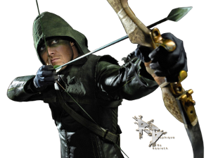
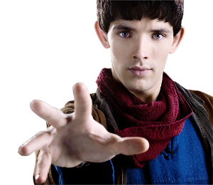

| Arrow | Friends | Merlin |
|  |  | |
| Les nouvelles aventures de Green Arrow/Oliver Queen, combattant ultra efficace issu de l'univers de DC Comics et surtout archer au talent fou, qui appartient notamment à la Justice League. Disparu en mer avec son père et sa petite amie, il est retrouvé vivant 5 ans plus tard sur une île près des côtes chinoises mais il a changé : il est fort, courageux et déterminé à débarrasser Starling City de ses malfrats... | Les péripéties de 6 jeunes newyorkais liés par une profonde amitié. Entre amour, travail, famille, ils partagent leurs bonheurs et leurs soucis au Central Perk, leur café favori... |
Les nouvelles aventures de Green Arrow/Oliver Queen, combattant ultra efficace issu de l'univers de DC Comics et surtout archer au talent fou, qui appartient notamment à la Justice League. Disparu en mer avec son père et sa petite amie, il est retrouvé vivant 5 ans plus tard sur une île près des côtes chinoises mais il a changé : il est fort, courageux et déterminé à débarrasser Starling City de ses malfrats... |